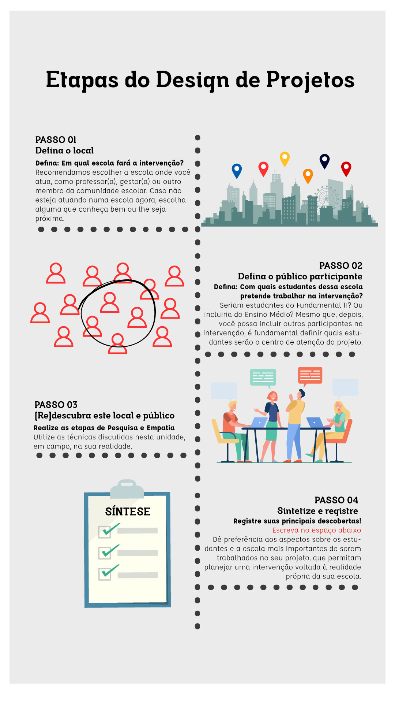

Agora que você já sabe como estabelecer Empatia com o público participante e como fazer Pesquisa sobre o contexto de intervenção, é hora de realizar e registrar essas etapas de design do projeto. Siga os passos indicados.

Para saber mais, clique aqui para acessar a versão em PDF dos passos para criar o design de projeto.
Por fim, avance para as telas de conclusão e da atividade desta unidade.